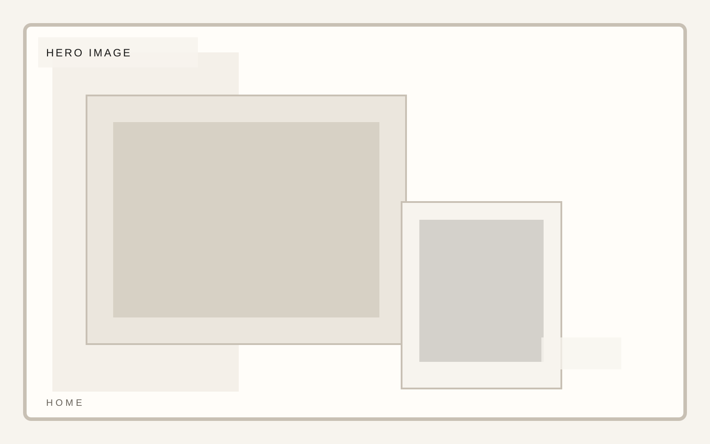
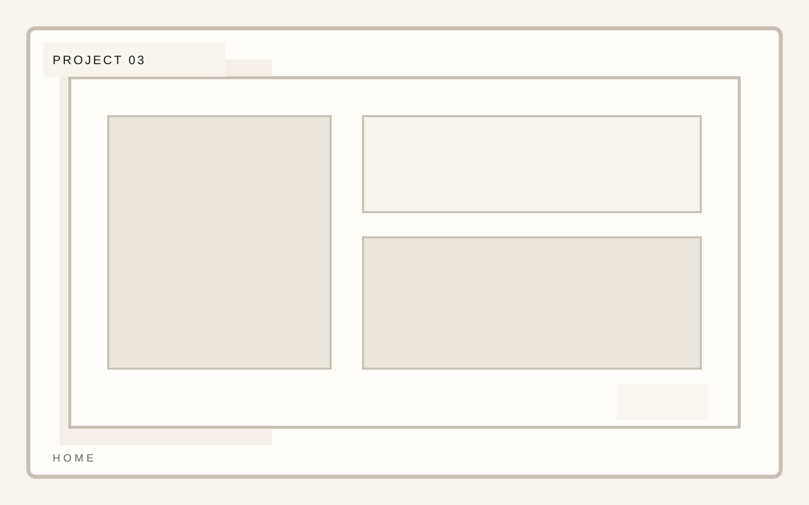

Practice
Editorial and portraiture

Photography portfolio
A portfolio template for photographers and image-makers who need rigorous composition, project rhythm, and clean editorial restraint. Image rhythm is the primary interface here.
Photography portfolio
Selected work should feel like sequencing, not merchandising. The arrangement matters as much as the images themselves.

Photography portfolio
The artist note needs to be short, credible, and quiet. It should deepen the frame, not explain the work to death.
Photography portfolio
A client or press list should feel incidental and clean, never like a trust badge pile.
Photography portfolio
Inquiry belongs in the same tonal register as the work: light, controlled, and image-aware.